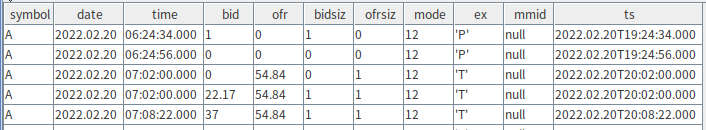
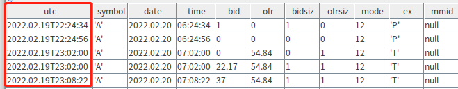

时区处理
本教程介绍了在DolphinDB中存储与导入时间数据时需要注意的时区问题。
DolphinDB 支持以下九种表示时间的数据类型：
| Data Type | Example |
|---|---|
| MONTH | 2012.06M |
| DATE | 2012.06.13 |
| MINUTE | 13:30m |
| SECOND | 13:30:10 |
| TIME | 13:30:10.008 |
| NANOTIME | 13:30:10.008000001 |
| DATETIME | 2012.06.13 13:30:10 or 2012.06.13T13:30:10 |
| TIMESTAMP | 2012.06.13 13:30:10.008 or 2012.06.13T13:30:10.008 |
| NANOTIMESTAMP | 2012.06.13 13:30:10.008000001 or 2012.06.13T13:30:10.008000001 |
1. 时间的存储方式
有的数据库在存储时间数据时，会将其转换为全球统一的 Unix 时间戳，并单独存储时区信息（即 UTC 偏移量）。 而 DolphinDB 将时间转换为本地时间戳直接存储，不会单独存储时区信息。Unix时间戳和本地时间戳的转换关系为：Unix 时间戳 + UTC 偏移量 (秒) = 本地时间戳
对于不需要存储时区信息的业务场景（见2.1 章节），用户将时间数据直接存入 DolphinDB，查询时 DolphinDB 按存入时间输出，不会增加时区转换；对于需要存储时区信息的业务场景（见2.2章节），用户在写入数据库时可以通过内置时区转换函数 gmtime 将本地时间转换成 UTC 时间进行存储，之后查询时通过内置函数 localtime（或 convertTZ）将数据转换回本地时间（或指定的时区）。
下面展示两种业务场景，通过比较是否存储时区信息两种方案，详细展示各场景下的最佳实践。
1.1. 场景一
场景信息概述
- 存储纽约某一交易所地交易数据，其中一列是交易时间，例如
2022.02.20 09:35:03。 - 数据库服务部署在北京（东八区）。
- 业务相关的端上服务（web、APP 等）一部分部署在北京（东八区），另一部分部署在旧金山（西八区）。
业务需求概述
- 要求无论是在北京（东八区）还是旧金山（西八区）的用户，访问端上服务时，查询时显示的数据时间显示和纽约交易所本地交易时间（西五区）一致，本例中以即显示
2022.02.20 09:35:03为例进行说明。
1.1.1. 方案一：存储时间信息
对于存储时区信息的数据库来说，此业务场景中将执行下列步骤：
- 将交易时间转化为本地时间戳。在本例中，
2022.02.20 09:35:03对应的本地时间戳（西五区）是1645349703。 - 将本地时间戳减去时区偏移量得到unix时间戳 (1645367703)，存入数据库。
- 用户通过部署在北京（东八区）或旧金山（西八区）的业务端访问数据库时，数据库将按照业务端服务器所在时区进行解析。因此，必须另行指定客户端按西五区时间显示时间数据，才能正确显示
2022.02.20 09:35:03。
从上述存储的时间转换过程来看，数据库存储时间时，如果带有时区的概念，需要在查询时指定显示的时区信息，引入一些时区转换的操作，给业务上带来一些不便。
1.1.2. 方案二：存储本地时间（即直接存储最终想要显示的时间）
1.1.2.1. 存储转换过程
- 直接存储交易时间
2022.02.20 09:35:03对应的时间戳 1645349703 入库即可。 - 用户在端上请求查询接口时，直接显示时间戳 1645349703 对应的时间
2022.02.20 09:35:03。
分析可知，场景一优先选择方案二：存储本地时间。在存储数据时，将交易时间2022.02.20 09:35:03 的纽约本地时间直接存储入库，不用考虑时区的问题。在读取数据时，省去了计算 Unix 时间戳以及各种服务跨时区设置不同偏移量的问题，可以简单明了地描述时间信息。
1.2. 场景二
在需要存储时区信息的场景下，DolphinDB 也可以通过一些内置函数实现存储时区信息。
场景信息概述
- 某中国买家通过电商平台，与日本卖家达成了一笔线上交易。交易时间为北京时间2022.05.20 11:30:05（东八区），东京时间2022.05.20 12:30:05（东九区）。
- 该电商公司在中国和日本都部署了数据中心，分别用于存储当前国家的交易数据。
业务需求概述
用户浏览订单时，平台显示的交易时间必须与用户所在时区一致，即中国买家看到北京时间，日本卖家看到东京时间。
1.2.1. 方案一：存储时区信息
北京买家的交易时间为
2022.05.20 11:30:05，可以使用 DolphinDB 的内置函数gmtime，将本地时间转换成零时区时间，并配合long函数得到Unix 时间戳，同理可得卖方东京时间的 Unix 时间戳。以数据库服务部署在东八区的中国为例，具体代码如下：$ gmtime(2022.05.20 11:30:05) 2022.05.20 03:30:05 $ long(gmtime(2022.05.20 11:30:05)) 1653017405由于该笔交易数据被转换成了 UTC 时间，其对应的 Unix 时间戳
1653017405对中国和日本用户来说是相同的。用户查看订单时，客户端从数据库中取出 Unix 时间戳，并根据服务器所在时区进行转换显示。此例中 Unix 时间戳为1653017405，中国用户看到的显示时间应为
2022.05.20 11:30:05，日本用户为2022.05.20 12:30:05。在 DolphinDB 中，可通过内置函数
localtime将零时区时间转换为本地时间。以东八区为例，示例代码如下：$ localtime(2022.05.20 03:30:05) 2022.05.20 11:30:05
1.2.2. 方案二：存储本地时间
在上述场景中采用存储本地时间的方案，会存在以下几个问题：
- 以哪个时区的本地时间为准？
- 即便规定好之后，我们需要明确既定的本地时间和其他时区的偏移关系。 计算“本地时间”与其他时区的偏移关系。
通过以上两个问题的思考，不难发现，在场景二中应该采用直接存储数据的 Unix 时间戳，并配合服务器的默认时区进行解析的方案。在该场景中，如果采用存储本地时间的方案，还要处理复杂的时差关系和夏令时等潜在问题。
2. Java API 的时间处理
本节基于 DolphinDB Java API 1.30.17.1 版本进行说明。
Java 中有关日期时间的常用类有以下四种： LocalDate、LocalTime、LocalDateTime 和 Date 。推荐大家使用 Java8 新特性中 LocalDate, LocalTime 和 LocalDateTime 本地时间相关的日期时间类配合 Java API 来处理时间信息。建议谨慎使用 Date 类来表示时间数据（详见 3.2 慎用 Date 类）。
2.1. 最佳实践
2.1.1. 使用 LocalDateTime
LocalDateTime now = LocalDateTime.now();//获取当前时间 LocalDateTime time = LocalDateTime.of(2022,2,20,9,35,3);// of方法指定年月日时分秒 // 时间计算相关 time.isAfter(now); time.isBefore(now); System.out.println(time.plusDays(1L)); System.out.println(time.minusHours(8)); // 支持指定时区偏移量 LocalDateTime.now(ZoneId.of("Australia/Sydney"));
LocalDateTime 的语义即为本地时间，当读者需要存储本地时间到 DolphinDB 数据库时，推荐大家使用这个类来实现相关的操作。
场景描述：批量导入纽约交易所的 csv 数据，要求导入后的时间数据与 CSV 中的时间数据应一致，教程中的 csv文件。
| symbol | date | time | bid | ofr | bidsiz | ofrsiz | mode | ex | mmid |
|---|---|---|---|---|---|---|---|---|---|
| A | 2022.02.20 | 8:02:20 | 36.32 | 201000 | 20 | 1 | 12 | 'D' | EDGA |
| A | 2022.02.20 | 8:02:20 | 36.32 | 39.98 | 20 | 20 | 12 | 'D' | EDGX |
| A | 2022.02.20 | 8:02:21 | 36.32 | 39.98 | 20 | 20 | 12 | 'D' | EDGA |
| A | 2022.02.20 | 8:05:19 | 36.33 | 39.98 | 20 | 20 | 12 | 'D' | EDGX |
| A | 2022.02.20 | 8:05:19 | 36.33 | 39.98 | 20 | 20 | 12 | 'D' | EDGA |
| A | 2022.02.20 | 8:05:20 | 36.33 | 39.97 | 20 | 20 | 12 | 'D' | EDGX |
| ... |
- step1：创建 DolphinDB 共享内存表
根据数据文件的结构建表，这里仅以写入共享内存表做为示例代码，读者可以根据实际情况进行调整。
conn.run("t = table(100:0,`symbol`datetime`bid`ofr`bidsize`ofrsize`mode`ex`mmid,[SYMBOL,DATETIME,DOUBLE,DOUBLE,LONG,LONG,INT,CHAR,SYMBOL])\n" + "share t as timeTest;");
- step2：解析 csv
这里笔者使用的第三方开源插件 OpenCSV 解析 csv 文件，使用时只需引入以下依赖即可。当然读者也可以根据自己的使用习惯或者已有的工具类来实现数据文件的解析。
CSVReader csvReader = new CSVReader(reader)
String[] record;
csvReader.readNext();// skip first line
while ((record = csvReader.readNext()) != null) {
// record[i]对应某一个行的某一个字段，此处完整代码请参考附录
}- step3：定义时间处理方法
csv 解析后的各个字段是 String 类型，这里通过 DateTimeFormatter 类指定时间信息的格式 yyyy.MM.dd H:mm:ss，实现 String 转化为 LocalDateTime。然后笔者将 LocalDateTime 的实例化对象转换成了本地时间戳，是为了方便后面写入时构建 BasicDateTimeVector。
public static int getTime(String timeStr){
DateTimeFormatter df = DateTimeFormatter.ofPattern("yyyy.MM.dd H:mm:ss");
LocalDateTime ldt = LocalDateTime.parse(timeStr,df);
return Utils.countSeconds(ldt);
}- step4：批量写入
此处构建各个列的 BasicVector ，实现批量写入（省略部分冗余代码，完整代码请参考附录）
public static void write() throws IOException {
// 构建list，省略部分列
LinkedList<String> symbolList = new LinkedList<>();
try (Reader reader = Files.newBufferedReader(Paths.get(CSV));
// 读取csv，插入到list中
} catch (IOException | CsvValidationException ex) {
ex.printStackTrace();
}
List<Entity> data = Arrays.asList(
new BasicSymbolVector(symbolList),
new BasicDateTimeVector(dtList),
new BasicDoubleVector(bidList),
new BasicDoubleVector(ofrList),
new BasicLongVector(bidSizeList),
new BasicLongVector(ofrSizeList),
new BasicIntVector(modeList),
new BasicByteVector(exList),
new BasicSymbolVector(mmidList)
);
conn.run("tableInsert{\"timeTest\"}", data);
}xxxxxxxxxx public static void write() throws IOException { // 构建list，省略部分列 LinkedList<String> symbolList = new LinkedList<>(); try (Reader reader = Files.newBufferedReader(Paths.get(CSV)); // 读取csv，插入到list中 } catch (IOException | CsvValidationException ex) { ex.printStackTrace(); } List<Entity> data = Arrays.asList( new BasicSymbolVector(symbolList), new BasicDateTimeVector(dtList), new BasicDoubleVector(bidList), new BasicDoubleVector(ofrList), new BasicLongVector(bidSizeList), new BasicLongVector(ofrSizeList), new BasicIntVector(modeList), new BasicByteVector(exList), new BasicSymbolVector(mmidList) ); conn.run("tableInsert{\"timeTest\"}", data);}1public static void write() throws IOException { 2 // 构建list，省略部分列 3 LinkedList<String> symbolList = new LinkedList<>(); 4 try (Reader reader = Files.newBufferedReader(Paths.get(CSV)); 5 // 读取csv，插入到list中 6 } catch (IOException | CsvValidationException ex) { 7 ex.printStackTrace(); 8 } 9 10 List<Entity> data = Arrays.asList( 11 new BasicSymbolVector(symbolList), 12 new BasicDateTimeVector(dtList), 13 new BasicDoubleVector(bidList), 14 new BasicDoubleVector(ofrList), 15 new BasicLongVector(bidSizeList), 16 new BasicLongVector(ofrSizeList), 17 new BasicIntVector(modeList), 18 new BasicByteVector(exList), 19 new BasicSymbolVector(mmidList) 20 ); 21 conn.run("tableInsert{\"timeTest\"}", data); 22} - step5：查询验证
Java API 查询示例代码如下：
BasicTable res = (BasicTable) conn.run("select * from timeTest");
System.out.println(res.getString());GUI 查询示例代码如下：
t = select * from timeTest print(t)
Java API 和 GUI 的查询结果如下图所示：

观察可知，无论是通过 API 还是 GUI 查询返回的表中数据，时间信息的存储和 csv 中的交易时间是完全一致的，符合业务需求。
2.2. 慎用 Date 类
时间数据在导入 DolphinDB 后，可能会出现其在 DolphinDB 中打印的值与原数据库中的值“不一致”的情况。这和 Java Date 类的存储逻辑有关，下面进行解释。
- 实例化 Date 类
Date date = new Date(); System.out.println(date); // Mon May 23 22:22:10 CST 2022
这里要注意的是，尽管直接打印 date 对象显示的是当前服务器时间，但其底层存储的是 Unix 时间戳（长整型）。
- 存储入库
执行如下代码，在 DolphinDB Server 端创建一个两列的共享内存表：
conn.run("t = table(100:0,`ts`value,[TIMESTAMP,INT]);share t as timeJava;");通过 Java API 写入一条数据，示例代码如下：
public static void write() throws IOException {
DBConnection conn = new DBConnection();
conn.connect("localhost", 8848, "admin", "123456");
LinkedList<Long> dtList = new LinkedList<>();// ts
LinkedList<Integer> valueList = new LinkedList<>();// value
Date date = new Date();
System.out.println(date);
dtList.add(date.getTime());
valueList.add(1);
List<Entity> data = Arrays.asList(
new BasicTimestampVector(dtList),
new BasicIntVector(valueList)
);
conn.run("tableInsert{\"testJava\"}", data);
}Java API 通过 System.out.println(date)将写入的时间打印到了前台，同时通过 DolphinDB GUI 查看共享内存表中写入的数据，对比结果如下图所示：

观察发现，Java 控制台打印的时间和数据入库时间不符，出现了时间错乱的现象，原因有以下两点：
- Date 对象实例化是通过
System.currentTimeMillis()返回的 Unix 时间戳实现的。关于 Date 的构造函数的更多信息，见 Java官方文档。
/**
* Allocates a <code>Date</code> object and initializes it so that
* it represents the time at which it was allocated, measured to the
* nearest millisecond.
*
* @see java.lang.System#currentTimeMillis()
*/
public Date() {
this(System.currentTimeMillis());
}
- 在 Java 中，Date 类的打印输出值是通过重写其 toString 方法来定制的，该方法涉及时区转换（见下面的源代码）。因此，尽管 Date 被存储为 Unix 的时间戳，但它是根据服务器的时区来打印的。
public String toString() {
// "EEE MMM dd HH:mm:ss zzz yyyy";
BaseCalendar.Date date = normalize();
StringBuilder sb = new StringBuilder(28);
int index = date.getDayOfWeek();
if (index == BaseCalendar.SUNDAY) {
index = 8;
}
convertToAbbr(sb, wtb[index]).append(' '); // EEE
convertToAbbr(sb, wtb[date.getMonth() - 1 + 2 + 7]).append(' '); // MMM
CalendarUtils.sprintf0d(sb, date.getDayOfMonth(), 2).append(' '); // dd
CalendarUtils.sprintf0d(sb, date.getHours(), 2).append(':'); // HH
CalendarUtils.sprintf0d(sb, date.getMinutes(), 2).append(':'); // mm
CalendarUtils.sprintf0d(sb, date.getSeconds(), 2).append(' '); // ss
TimeZone zi = date.getZone();
if (zi != null) {
sb.append(zi.getDisplayName(date.isDaylightTime(), TimeZone.SHORT, Locale.US)); // zzz
} else {
sb.append("GMT");
}
sb.append(' ').append(date.getYear()); // yyyy
return sb.toString();
}另一方面，DolphinDB 把导入的时间的 Unix 时间戳存储在 LONG 类型中，并以 UTC 时区显示。
因此，虽然时间值在导入 DolphinDB 前后显得 "不一致"，但事实上在这个过程中没有任何修改。
3. MySQL 的时间处理
3.1. MySQL常用时间类型和时区的关系
本节基于 MySQL 5.7 版本进行说明，本节讨论的日期时间类型有：DATETIME, TIMESTAMP, DATE, TIME。
- DATE, TIME, DATETIME：和时区无关，存进去的值不会根据时区的调整而改变。
- TIMESTAMP：和时区相关，TIMESTAMP 存储的是 Unix 时间戳，显示时会将时间戳转换为设置的时区进行显示。
使用下面的命令来检查 MySQL 中时区变量的值。输出显示系统时区是 "CST"（中国标准时间，即 UTC+8），服务器时区与系统时区相同。
mysql> show variables like '%time_zone%';
+------------------+--------+
| Variable_name | Value |
+------------------+--------+
| system_time_zone | CST |
| time_zone | SYSTEM |
+------------------+--------+执行如下命令，创建数据库和表：
mysql> USE testdb;
mysql> CREATE TABLE testTable(
-> date DATE NOT NULL,
-> time TIME NOT NULL,
-> ts TIMESTAMP NOT NULL
-> );
Query OK, 0 rows affected (0.11 sec)插入测试数据后，查看数据：
mysql> select * from testTable;
+------------+----------+---------------------+
| date | time | ts |
+------------+----------+---------------------+
| 2022-06-14 | 23:13:15 | 2022-06-14 23:13:15 |
+------------+----------+---------------------+
1 row in set (0.00 sec)此时，设置数据库时区为东九区，再次查看数据：
mysql> set time_zone='+09:00';
Query OK, 0 rows affected (0.01 sec)
mysql> show variables like '%time_zone%';
+------------------+--------+
| Variable_name | Value |
+------------------+--------+
| system_time_zone | CST |
| time_zone | +09:00 |
+------------------+--------+
2 rows in set (0.00 sec)
mysql> select * from testTable;
+------------+----------+---------------------+
| date | time | ts |
+------------+----------+---------------------+
| 2022-06-14 | 23:13:15 | 2022-06-15 00:13:15 |
+------------+----------+---------------------+
1 row in set (0.00 sec)比较时区变化前后的查询结果："date" 和 "time" 列包含固定的 DATE 和 TIME 值，因此没有变化；"ts" 列中的 TIMESTAMP 值随着时区从 UTC+8 变为 UTC+9 而向前推进了1小时。
3.2. MySQL 时间类型导入 DolphinDB
本节通过 DolphinDB 的 MySQL 插件，将 MySQL 中的数据快速导入 DolphinDB。MySQL 插件会自动完成数据类型转换。MySQL时间类型与DolphinDB时间类型转换关系如下表。关于插件更多使用介绍，请参考：MySQL插件使用说明。
| MySQL类型 | DolphinDB类型 |
|---|---|
| DATE | DATE |
| TIME | TIME |
| DATETIME | DATETIME |
| TIMESTAMP | TIMESTAMP |
DolphinDB 还支持如下时间相关的类型：MONTH, MINUTE, SECOND, NANOTIME, NANOTIMESTAMP。
首先导入一批纽约交易所的 csv 数据至 MySQL 中，本次测试 MySQL 全局 time_zone 设置为 UTC，csv 示例数据和 MySQL 导入代码见附录。
为了对比 DATE, TIME 和 TIMESTAMP 类型的值分别导入到 DolphinDB 中的效果，笔者新增一列 ts（TIMESTAMP 类型），插入了交易时间（西五区）对应的 UTC 时间数据，相比 time 列的数据晚了5个小时。
完成导入后查看数据：
mysql> select * from taqTs limit 5;
+--------+------------+----------+-------+-------+--------+--------+------+-----+------+---------------------+
| symbol | date | time | bid | ofr | bidsiz | ofrsiz | mode | ex | mmid | ts |
+--------+------------+----------+-------+-------+--------+--------+------+-----+------+---------------------+
| A | 2022-02-20 | 06:24:34 | 1.00 | 0.00 | 1 | 0 | 12 | 'P' | null | 2022-02-20 11:24:34 |
| A | 2022-02-20 | 06:24:56 | 0.00 | 0.00 | 0 | 0 | 12 | 'P' | null | 2022-02-20 11:24:56 |
| A | 2022-02-20 | 07:02:00 | 0.00 | 54.84 | 0 | 1 | 12 | 'T' | null | 2022-02-20 12:02:00 |
| A | 2022-02-20 | 07:02:00 | 22.17 | 54.84 | 1 | 1 | 12 | 'T' | null | 2022-02-20 12:02:00 |
| A | 2022-02-20 | 07:08:22 | 37.00 | 54.84 | 1 | 1 | 12 | 'T' | null | 2022-02-20 12:08:22 |
+--------+------------+----------+-------+-------+--------+--------+------+-----+------+---------------------+然后在 DolphinDB 中加载 MySQL 插件，将 MySQL 数据导入到 DolphinDB 内存表，具体代码如下：
// 加载插件
loadPlugin("/DolphinDB/server/plugins/mysql/PluginMySQL.txt");
// 连接 MySQL Server
conn = mysql::connect(`127.0.0.1, 3306, `root, "root", `testdb)
// 执行导入
taqDdb = mysql::load(conn, "SELECT * FROM taqTs");
// 查看数据
select * from taqDdb;
由此可见，如果用户想同步 MySQL 数据库中的 UTC 表示的 TIMESTAMP 类型的列到 DolphinDB，需要先设置 MySQL 的全局 time_zone 为 UTC。对于 DATE, TIME 和 TIMESTAMP 类型的数据，导入前后对比可见，DolphinDB 和 MySQL 是完全一致的。
需要注意的是，MySQL 的 time_zone 时区设置分为全局和会话两种级别，如果用户发现在 MySQL 的客户端查询和导入到 DolphinDB 中的时间不一致，首先需要检查全局 time_zone 和会话 time_zone 是否一致，DolphinDB 处理 MySQL 的 TIMESTAMP 列时，会按照全局 time_zone 下的时间戳进行存储。
比如此时在 MySQL 查询客户端中设置会话 time_zone = '+08:00'，并查看数据，可以观察到本次查询会话中 ts 列的数据从 UTC 转换成了东八区时间进行显示：
mysql> set time_zone='+08:00';
Query OK, 0 rows affected (0.00 sec)
mysql> select * from taqTs limit 5;
+--------+------------+----------+-------+-------+--------+--------+------+-----+------+---------------------+
| symbol | date | time | bid | ofr | bidsiz | ofrsiz | mode | ex | mmid | ts |
+--------+------------+----------+-------+-------+--------+--------+------+-----+------+---------------------+
| A | 2022-02-20 | 06:24:34 | 1.00 | 0.00 | 1 | 0 | 12 | 'P' | null | 2022-02-20 19:24:34 |
| A | 2022-02-20 | 06:24:56 | 0.00 | 0.00 | 0 | 0 | 12 | 'P' | null | 2022-02-20 19:24:56 |
| A | 2022-02-20 | 07:02:00 | 0.00 | 54.84 | 0 | 1 | 12 | 'T' | null | 2022-02-20 20:02:00 |
| A | 2022-02-20 | 07:02:00 | 22.17 | 54.84 | 1 | 1 | 12 | 'T' | null | 2022-02-20 20:02:00 |
| A | 2022-02-20 | 07:08:22 | 37.00 | 54.84 | 1 | 1 | 12 | 'T' | null | 2022-02-20 20:08:22 |
+--------+------------+----------+-------+-------+--------+--------+------+-----+------+---------------------+
5 rows in set (0.00 sec)在 DolphinDB 中重新连接 MySQL，执行上述的数据导入代码，此时全局 time_zone 还是 UTC，且没有临时设置会话 time_zone，所以 ts 列的数据还是和 MySQL 中保持一致，查询同步到 DolphinDB 的结果表如下：

此时若通过 set global time_zone='+08:00'，设置 MySQL 的全局 time_zone 为东八区，然后在 DolphinDB 中重新连接 MySQL，执行上述的数据导入代码。此时，MySQL 的全局 time_zone 为东八区，ts 是 TIMESTAMP 类型，存储的是 Unix 时间戳，根据设置的时区转换，从 MySQL 查询获得的 ts 列时间自动转换成了东八区的时间，所以比原始的 UTC 会晚8个小时，查询同步到 DolphinDB 的结果表如下：

4. CSV 文件的时间处理
DolphinDB 提供内置函数 loadText 和 loadTextEx 函数，实现将 csv 数据加载到 DolphinDB 的内存表和分布式表中。本节以 loadText 函数为例，对于日期列或时间列，如果 DolphinDB 识别的数据类型不符合预期，不仅需要在 schema 的 type 列指定时间类型，还需要在 format 列中指定数据文件中日期或时间的格式（用字符串表示），如 "MM/dd/yyyy"。如何表示日期和时间格式请参考日期和时间的调整及格式。如何加载文本数据请参考 DolphinDB文本数据加载教程。
加载数据文件，查看数据，具体代码如下：
data = loadText("/data/taq.csv")
对于实现存储无时区的本地时间，date 列指定用 DolphinDB 的 DATE 类型存储，time 列指定用 DolphinDB 的 TIME 类型存储即可。
在使用时如涉及时区信息，可根据需要使用以下内置函数。以上述 data 表为例进行说明：
- 利用 DolphinDB 内置时区转换函数
gmtime，把本地时间（测试系统的本地时间为东八区时间）转换成格林尼治时间（零时区时间）：
gmData = select gmtime(concatDateTime(date,time)) as utc, * from data;

- 利用 DolphinDB 内置时区转换函数
localtime，把零时区时间转换成本地时间（测试系统的本地时间为东八区时间） ：
localData = select localtime(utc) as localtime,* from gmData;

- 利用 DolphinDB 内置时区转换函数
convertTZ完成两个指定时区之间的转换：
convertTZ(2022.04.25T08:25:45,"US/Eastern","Asia/Shanghai");

DolphinDB 存储时间值时没有时区信息。相反，它提供各种时区转换功能，让你决定在哪个时区存储和检索时间值。
5. 总结
总的来说，用户在使用 DolphinDB 时，关于时间列的存储主要面临以下两个问题：
数据迁移后，时间列“显示”不一致的问题
- 这里需要注意的是，DolphinDB 不会主动修改时间列的整型值，所以会把查询取得的时间列的整型值存入 DolphinDB。本教程以 Java API 写入和 MySQL 数据同步为例，详细讲述了数据导入 DolphinDB 的过程中对时间列的处理细节，以解决数据迁移后，时间列”显示“不一致的问题。
如何实现有无时区的存储
储存没有时区信息的时间值。
直接将时间值（日期、时间或TIMESTAMP类型）保存到 DolphinDB。数据将按照最初保存的方式返回，没有任何时区转换。
- 存储带有时区信息的时间值。
使用 gmtime 将时间值从本地时间转换为 UTC 时间来存储。使用 localtime（或convertTZ）将数据转换回本地时间（或指定的时区）以便检索。